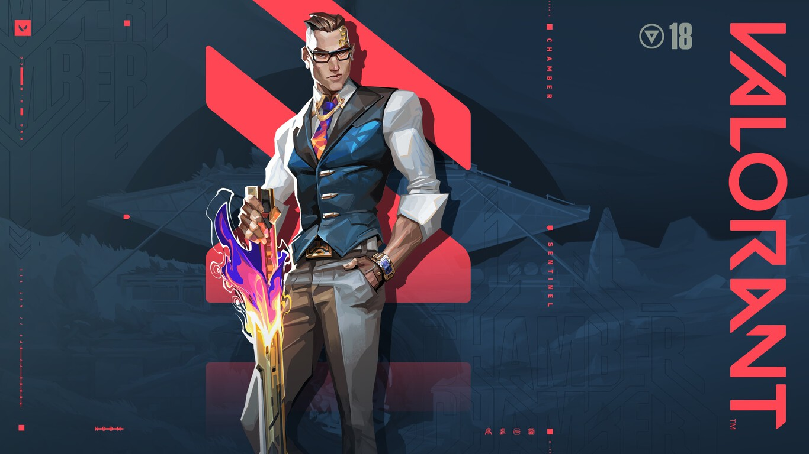
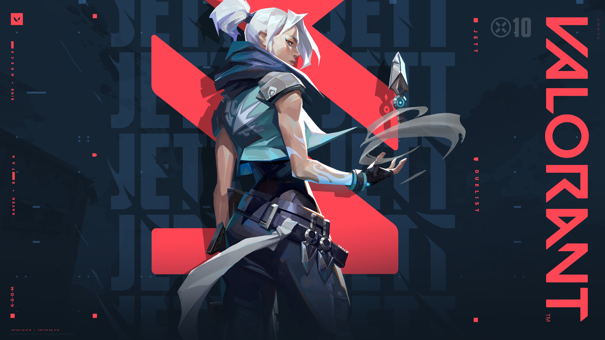
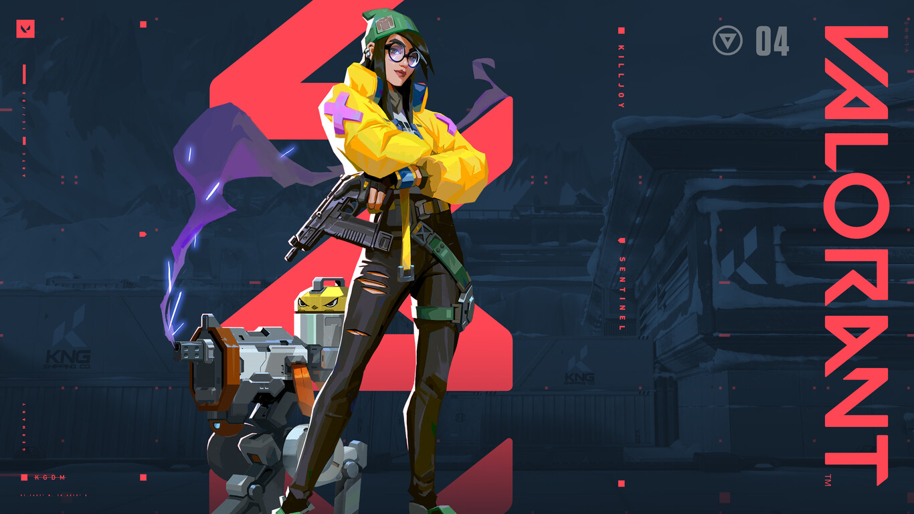
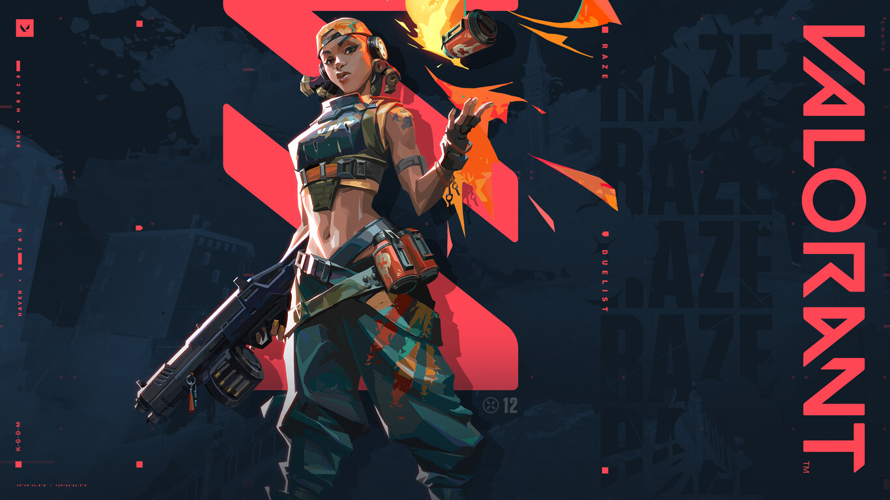
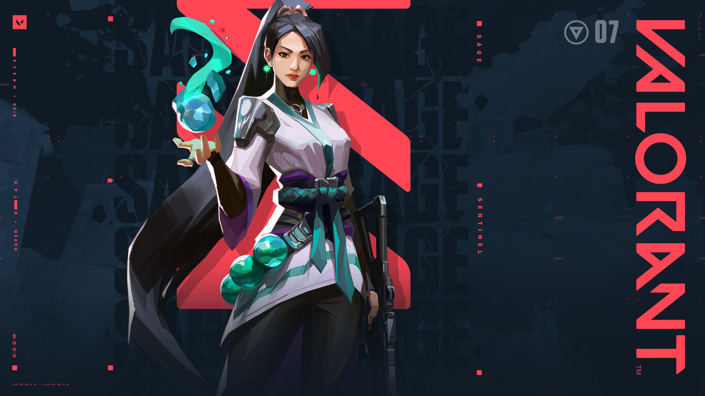

AGENTES
Al ser un shooter táctico en el que debemos trabajar en equipo para lograr la victoria, Valorant está
pensado
para que cada personaje cumpla una función.Más allá del tipo de personaje que elijamos, también
deberemos
tener en cuenta que las habilidades individuales de cada uno son únicas.
Cada personaje tiene cuatro habilidades únicas: dos básicas, una firma y otra definitiva
Como las armas, las habilidades deben comprarse después de cada ronda. Algunas son gratis y se
recargan
La habilidad definitiva necesita puntos para poder ser activada. Puntos que se pueden conseguir
matando, colocando la Spike o recogiendo orbes en los mapas
Lista de personajes y sus caracteristicas
Breach
Breach, el sueco biónico, lanza poderosas ráfagas cinéticas para abrirse paso a la fuerza a través
del
territorio enemigo. El daño y la interrupción que inflige garantizarán que ninguna pelea sea justa
Habilidades
Q: FULGOR: La carga detonará y cegará a todos los jugadores que la vean. E: FALLA SÍSMICA: Sueltalo
para
iniciar el temblor y aturdir a todos los jugadores que estén en la zona. C: RÉPLICA: La ráfaga
infligirá
daño masivo a todos los que estén en su alcance. X: TRUENO RODANTE: El temblor aturde y lanza por el
aire a todos los que impacta.
Brimstone
Proveniente de Estados Unidos, Brimstone proporciona una constante ventaja para su equipo con su
arsenal
orbital. Su habilidad otorga información de forma precisa y a distancia, lo que lo hace un
comandante
sin igual en el campo.
Habilidades
Q: LA INCENDIARIA: Equipa un lanzagranadas incendiario y dispara para lanzar una granada que explota
cuando se detiene en el suelo. E: HUMO CELESTIAL: Equipa un mapa táctico y dispara para marcar las
ubicaciones en las que caerán las nubes de humo de Brimstone. C: BALIZA POTENCIADORA: Equipa una
baliza
potenciadora y dispara para lanzarla frente a Brimstone. X: ATAQUE ORBITAL: Equipa un mapa
estratégico y
dispara para lanzar un ataque orbital prolongado de un láser en la ubicación seleccionada.
Chamber

Bien vestido y bien armado, el diseñador de armas francés Chamber repele agresores con una precisión
mortal. Aprovecha su arsenal personalizado para mantener a los enemigos a raya y eliminarlos desde
lejos. Siempre cuenta con la contingencia perfecta para cada plan.
Habilidades
Q: CAZADOR DE CABEZAS: Activala para equipar una pistola pesada. E: RENDEZVOUS: Equipa un anclaje de
teletransportación. Dispara para colocarlo en el suelo. C: MARCA REGISTRADA: Equipa una trampa que
escanea los alrededores buscando enemigos. Dispara para colocarlo en el suelo. X: TOUR DE FORCE:
Activa
para invocar un poderoso rifle de francotirador personalizado que mata a un enemigo con cualquier
impacto directo en la parte superior del cuerpo.
Cypher
Cypher, el agente de información marroquí, es un sistema de vigilancia de un solo hombre que puede
monitorear todos los movimientos de sus enemigos. No hay secreto que no descubra ni maniobra que no
detecte. Cypher siempre está vigilando.
Habilidades
Q: CIBERJAULA: Lanza al instante una ciberjaula frente a Cypher. Actívala para crear una zona que
bloquea
la visión y ralentiza a los enemigos que la atraviesan. E: CÁMARA ESPÍA: Equipa una cámara espía.
dispara para colocarla en la ubicación seleccionada. C: CABLE TRAMPA: DISPARA para lanzar un dardo
marcador que revelará la ubicación de cualquier jugador al que impacte. X: ASALTO NEURAL: Apunta
hacia
un jugador enemigo muerto y úsalo de inmediato para revelar la ubicación de todos los jugadores
enemigos
con vida.
Gekko
Gekko, el nativo de Los Ángeles, lidera un grupo de criaturas revoltosas y son como uña y mugre. Sus
amiguitos avanzan a toda velocidad, dispersando a los enemigos, y Gekko los persigue para
reagruparlos y
lanzarlos de nuevo.
Habilidades
Q: CARNALITO: Equipa a Carnalito y dispara para enviarlo hacia adelante en busca de enemigos;
Carnalito
libera una explosión contusiva hacia el primer enemigo que ve. E: VÉRTIGO: Equipa a Vértigo y
dispara
para enviarlo volando hacia adelante. Vértigo carga y luego libera explosiones de plasma contra los
enemigos en su campo de visión. C: POGO BRUTAL: Equipa a Pogo y dispara para lanzarlo como una
granada;
presiona el disparo secundario para lanzarlo por abajo. X: PALIZA: Equipa a Paliza y dispara para
vincularte con la mente de Paliza y dirigirla a través del territorio enemigo; activa para embestir
hacia adelante y explotar, lo que inmoviliza a los enemigos en un pequeño radio.
Jett

Proviene de Corea del Sur. El ágil y evasivo estilo de pelea de Jett le permite enfrentarse a riesgos
que
otros no pueden. Es imparable en todos los enfrentamientos y acaba con sus enemigos antes de que
sepan
qué los atacó.
Habilidades
Q: RÁFAGA ASCENDENTE: Propulsa a Jett hacia el aire al instante. E: IMPULSO CICLÓN: Activa para
preparar
una ráfaga de viento durante un tiempo limitado. Vuelve a usar el viento para propulsar a Jett en la
dirección a la que se dirige Punto/Cero. C: NUBE EXPLOSIVA: Lanza un proyectil al instante que se
convierte en una nube que bloquea la visión al impactar alguna superficie. X: TORMENTA DE CUCHILLAS:
Equipa un conjunto de cuchillos arrojadizos de gran precisión.
Killjoy

La prodigio alemana Killjoy asegura fácilmente los puntos estratégicos del campo de batalla con su
arsenal de inventos. Si el daño que inflige no detiene a sus enemigos, las debilitaciones de sus
robots
la ayudarán a aniquilarlos.
Habilidades
Q: ALARMABOT: Después de alcanzar a su objetivo, el bot explota, lo que inflige daño y aplica
Vulnerable.
E: TORRETA: Equipa una Torreta. Dispara para desplegar una torreta que les dispara a los enemigos
cercanos en un cono de 180 grados. C: NANOPLAGA: Equipa una granada de Nanoplaga. Dispara para
lanzar la
granada. La Nanoplaga queda encubierta al aterrizar. X: DISPOSITIVO INMOVILIZADOR: Equipa el
Dispositivo
Inmovilizador. Dispara para desplegar el dispositivo.
Raze

Raze llega de Brasil con su explosiva personalidad y sus grandes armas. Gracias a su contundente
estilo
de juego, es muy buena para separar a los enemigos atrincherados y para despejar espacios estrechos
con
una gran cantidad de explosiones.
Habilidades
Q: PAQUETE EXPLOSIVO: Lanza al instante un Paquete Explosivo que se adhiere a las superficies. E:
CARCASAS DE PINTURA: Equipa una granada de racimo. Dispara para lanzar la granada, lo que inflige
daño y
crea submuniciones que dañan a cualquiera que esté dentro de su alcance. C: BUMBOT: El bot se moverá
en
línea recta por el suelo y rebotará en los muros. X: TUMBADIVAS: Equipa un lanzamisiles. Dispara
para
lanzar un misil que inflige daño de área masivo al entrar en contacto con algo.
Reyna

Desde el corazón de México, Reyna llega para dominar los duelos uno contra uno y cada asesinato que
realiza aumenta su poder. Su letalidad solo está limitada por tu destreza al usarla, por lo que su
eficacia dependerá mucho de ello.
Habilidades
Q: DEVORAR: Los enemigos eliminados por Reyna dejan orbes de almas que duran 3 seg. Consume al
instante
un orbe de almas cercano y la cura rápidamente durante un breve momento. E: DESECHAR: Consume al
instante un orbe de almas cercano para volverse intangible durante un breve momento. C: LA MIRADA:
Equipa un ojo destructible y etéreo. Activalo para lanzarlo a una corta distancia y todos los
enemigos
que lo vean se ofuscarán. X: LA EMPERATRIZ: Entra al instante en un frenesí, lo que aumenta
considerablemente la velocidad de disparo, equipamiento y recarga.
Sage

El bastión de China. Sage proporciona seguridad para sí misma y para su equipo en cualquier lugar.
Gracias a su capacidad de revivir a sus compañeros caídos y evitar ataques agresivos, les da un
lugar de
protección en medio de la caótica pelea.
Habilidades
Q: ORBE RALENTIZADOR: Este detonará al caer al suelo y creará un campo que permanecerá en la zona y
ralentizará a los jugadores que estén dentro de él. E: ORBE CURATIVO: Usa el disparo secundario
cuando
Sage esté herida para curarla con el tiempo. C: ORBE DE BARRERA: Equipa un orbe de barrera y dispara
para colocar una pared sólida. X: RESURRECCIÓN: Equipa una habilidad de resurrección y dispara
mientras
apuntas hacia un aliado muerto para comenzar a resucitarlo